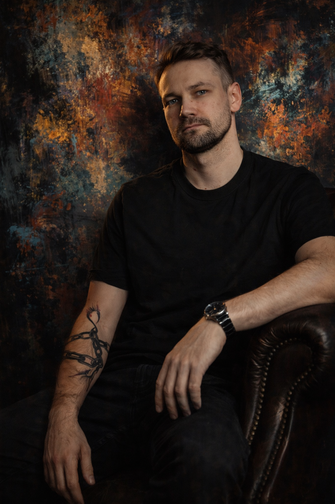

Lead captured
request parsed
Geometry validated
margin protected
Production synced
workflow aligned
AI audit
logic checked
System Builder from Real Business Chaos
Я превращаю операционный хаос бизнеса в цифровые системы.
Продажи, производство, монтажи, ручные расчёты и операционный шум — среда, из которой вырос мой подход к CRM, ERP и AI-системам.
Identity
Не классический разработчик. Не теоретик. Не консультант из презентаций. А системный человек из реального операционного хаоса.

Thinking model
Моя работа начинается не с кода. Она начинается с разбора хаоса.
Я ищу, где теряются заявки, сроки, деньги и ответственность. Я разбираю хаос до уровня логики — чтобы бизнес перестал держаться на памяти людей.
Experience
6+ лет в продажах, операционке, маркетплейсах, управлении и автоматизации.
Операционный директор / системный разработчик / CRM-ERP администратор
Разработка и внедрение собственной CRM/ERP логики, автоматизация процессов, контроль заявок, расчётов, монтажей и производственной логики.
- Разработка production MVP CRM/ERP для производственно-монтажного бизнеса
- Системный аудит процессов: от рекламы и лида до расчёта, производства и монтажа
- Работа с Avito, рекламными каналами, клиентскими потоками и контентом
- Создание ТЗ, логики интерфейсов, сценариев автоматизации и AI-assisted workflow
Администратор магазина
Организация работы магазина, продажи, кассовая отчётность, логистика, маркетплейсы, Авито, Юла, контент и адаптация персонала.
Продавец-консультант
Активные продажи, консультации, касса, оценка товара, контроль цен, входящие звонки, поставщики и работа с площадками объявлений.
Capabilities
Мои компетенции на стыке бизнеса, продукта, процессов и AI-инструментов.
Main project
Easy Mo Core — ERP/CRM изнутри реального производственно-монтажного бизнеса.
Операционная среда, где продажи, производство и монтаж больше не существуют отдельно друг от друга.
client.card.updated
snapshot.locked
mounting.date.synced
What it does
Не учебная демка. Система, которая родилась из реальной операционной боли.
История, статусы и файлы в одном месте
Полная карточка с хронологией заказов, вложенными файлами, статусами и коммуникацией. Ничего не теряется — всё остаётся привязанным к клиенту.
Расчёт стоимости, себестоимости и прибыли по каждому заказу
Автоматический расчёт по размерам, геометрии, материалам и крепежу. Контроль перерасхода и прибыли. Исторические заказы защищены от пересчёта при изменении цен.
Kanban, архив, поиск, календарь монтажей и загрузка файлов
Полный цикл от замера до монтажа в одной логике. Статусы синхронизированы между отделами — производство видит то же, что видят продажи.
Next.js
React
TypeScript
Prisma
PostgreSQL
S3
Core statement
Я не угадываю боль рынка. Я из неё вышел.
Я видел бизнес, который держится на памяти людей. На таблицах, которые боятся трогать. На менеджерах, которые “знают как правильно”, но не могут объяснить систему. Поэтому я не просто настраиваю инструменты. Я помогаю превращать ручной, перегруженный бизнес в систему, где видны данные, деньги, люди и слабые места.
Why it matters
Малый бизнес часто держится не на системе, а на людях, которые уже перегружены.
Collaboration
Готов к удалённой работе, проектному сотрудничеству и партнёрству.
Contact
Если вашему бизнесу уже тесно внутри ручного хаоса, возможно пора строить систему.
Для работы, проектного сотрудничества, обсуждения Easy Mo Core, партнёрства или первого разговора без обязательств напишите мне:
Доступен для удалённой работы и системных проектов